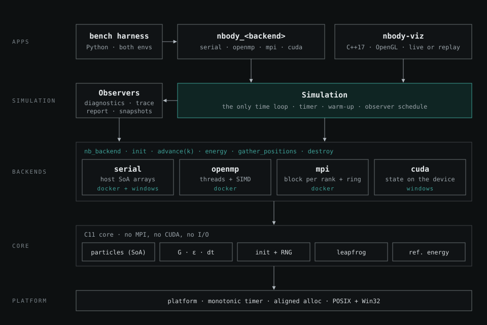
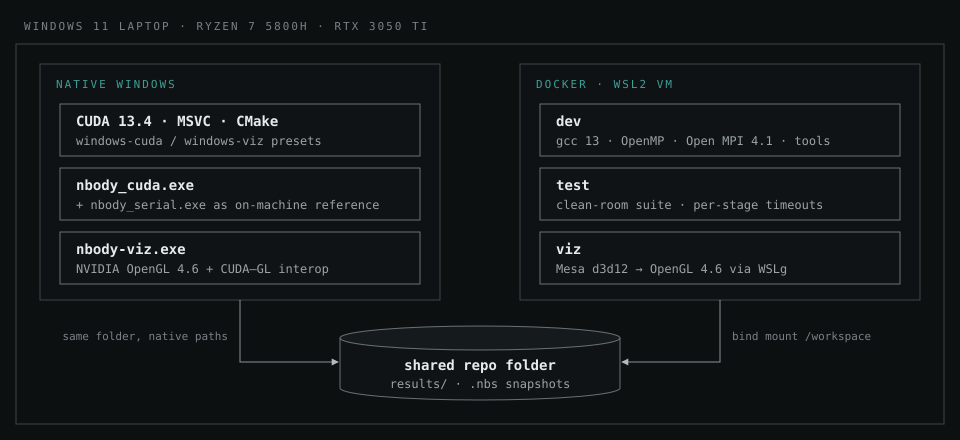
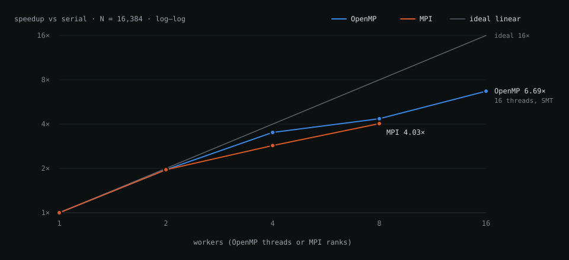

Overview
Simulating gravity directly means computing the pull of every body on every other body: N² interactions per step, so 16,384 particles is 268 million interactions per step. That makes direct-summation N-body the classic benchmark for parallel hardware, and a good way to answer a practical question: what does each parallel programming model actually buy you over one well-written core?
The project answers it with four implementations of the same simulation: a serial baseline, OpenMP threads, MPI processes and a CUDA GPU kernel. The first version ran and produced numbers. This case study is about what came next: measuring and auditing that version, finding where its numbers and its structure could not be trusted, and redesigning it so that a fair comparison is guaranteed by the architecture instead of by discipline.
- 4independent backends running identical physics
- 3.2×serial speedup from changing one function call
- 359 GFLOP/sOpenMP on an 8-core laptop CPU after that fix
- 12defects catalogued in the audit, 3 reproduced
The problem
Speedup numbers are easy to inflate by accident. A parallel version that uses different physics, different precision or a different starting state is not comparable to its baseline. Neither is a "baseline" that is really the parallel code run with one thread, or a timer that also measures file I/O and diagnostics. Informal comparisons often make at least one of these mistakes, and then the headline speedup means very little.
Requirements
The project therefore had requirements beyond "make it fast":
-
Identical physics everywhere. Velocity-Verlet integration, softened
gravity, and initial conditions from a portable random generator
(SplitMix64, not
rand()), so every backend starts from the same bits on every platform. - An honest baseline. Every speedup is relative to the best serial implementation, never to a parallel backend run with one worker.
- Clean timing. Warm-up steps are excluded, energy diagnostics run outside the timed region, MPI time is the maximum over all ranks, and the GPU is synchronised before the timer is read.
- Checkable correctness. Each backend must be shown to compute the same physics, not just to finish sooner.
- Visualisation without interference. Watching a simulation must never change its benchmark numbers.
- Extensible. A new backend variant, MPI exchange strategy or output format should be one new module, not edits across several programs.
Constraints
- One development machine: a Windows 11 laptop with an AMD Ryzen 7 5800H (8 cores, 16 threads) and an NVIDIA RTX 3050 Ti Laptop GPU with 4 GB.
-
Two toolchains that do not overlap. The CPU and MPI code is POSIX-only
(
clock_gettime, GNU Make, bash, Open MPI), while the CUDA 13.4 toolkit and the MSVC compiler it needs are installed natively on Windows. - The simulation core has to compile with gcc, MSVC and nvcc alike.
Auditing the first version
The first version had good bones: one data model, a Structure-of-Arrays layout on every backend, double-precision energy accumulation, and a strict split between one machine-readable CSV row on stdout and human-readable logs on stderr. Before optimising anything, I built a reproducible Linux test image, measured a baseline and reviewed the code end to end. Three findings changed the plan.
A one-line bug worth four threads
The single-precision kernels computed 1 / sqrt(r2). In C, sqrt is the
double-precision function, so every interaction made a round trip through
double precision inside the hottest loop of the program. Switching to sqrtf
removed 13 precision conversions from that loop and let the compiler emit
vectorised reciprocal square roots.
| Configuration | Before | With sqrtf | Gain |
|---|---|---|---|
| serial, N = 4,096 | 14.96 ms/step | 4.71 ms/step | 3.2× |
| serial, N = 16,384 | 243.0 ms/step | 76.0 ms/step | 3.2× |
| OpenMP 16 threads, N = 16,384 | 37.2 ms/step | 15.0 ms/step | 2.5× |
| OpenMP 16 threads, N = 65,536 | 549 ms/step | 217 ms/step | 2.5× |
A 3.2× serial gain is about what four OpenMP threads were buying. Tuning parallelism on top of the old kernel would have been optimising the wrong thing.
The time loop existed three times
The only contract between the shared code and a backend was one function,
compute_forces, operating on arrays in host memory. That fits serial and
OpenMP, but not MPI (data split across processes) or CUDA (data on the GPU).
So each of those re-implemented the whole driver: the time loop, warm-up,
diagnostic scheduling, energy tracing and cleanup, partly as multi-statement
macros capturing around 20 local variables. Three copies of the loop meant
every feature was written three times, and the copies had already drifted
apart.
The worst drift was a deadlock. The MPI loop decided whether to run its final energy diagnostic partly by checking whether an energy-trace file was open, and only rank 0 opens that file. With certain flag combinations, rank 0 entered a collective operation that the other ranks never joined, and the run hung forever. The project's own trace script only avoided it because 200 steps happen to divide evenly by 5.
Other findings
- The build lied silently. The Makefile had no header dependencies, and precision was not part of the object file names. Asking for a double build after a float build relinked float objects into a "double" binary that ran and printed plausible numbers.
- The GPU backend was really a CUDA + MPI hybrid that kept particle state on the host and made about 13 blocking calls and PCIe copies per step. Because it needed MPI, GNU Make and POSIX timers, it could not be built next to the CUDA toolkit on Windows at all.
- Physics constants were duplicated between the C headers and the CUDA source, so the CPU and the GPU could silently disagree about gravity or softening.
- Verification was end-to-end only: one final energy number per backend. A wrong force that still roughly conserves energy would pass.
Architecture
The redesign keeps everything the audit confirmed was right: the shared physics, the SoA layout, the measurement hygiene, the MPI ring algorithm and the tiled CUDA kernel. What changes is how the pieces fit together.

- Platform. A monotonic timer and aligned allocation, each with a POSIX and a Win32 version. This is the only place platform calls are allowed, which is what lets the core compile with gcc, MSVC and nvcc.
- Core. Plain C11: the particle arrays, physics parameters (G, softening ε, timestep dt) as runtime values instead of compile-time constants, initial conditions, the leapfrog integrator and a reference energy calculation.
-
Backends. Four implementations of one interface,
nb_backend. Each owns its data in the layout its paradigm needs: host arrays for serial and OpenMP, one block per rank for MPI, device memory for CUDA. -
Simulation layer. One
Simulationdriver, the only time loop in the system, owns the timer, the warm-up and the schedule. Observers handle everything that is not stepping: diagnostics, energy traces, the benchmark report, snapshot files and live frames for the viewer. -
Applications. One command-line front-end, compiled once per backend
(
nbody_serial,nbody_openmp,nbody_mpi,nbody_cuda), a separate OpenGL viewer, and a Python benchmark harness that runs in both environments.
Implementation
The redesign is delivered in phases: stabilise and fix, then a portable build and a test safety net, then the refactor onto the new interfaces, after which CPU performance, GPU performance and visualisation can proceed in parallel. These are the parts that answer the problems the audit found.
- advance(k)the backend runs every step up to the next observer event
- pause timeronly when an observer is due
- on_stepevery observer, called on every rank
- resume timerand continue stepping
advance call over the whole timed region.One interface, four data layouts
The backend contract is advance(k): run k steps and return. The driver never
sees forces or the integrator, so the shape of the computation stays private to
each backend.
struct nb_backend {
const char *name; /* "serial" | "openmp" | "mpi" | "cuda" */
int rank, size; /* 0 and 1 except for MPI */
int (*init)(nb_backend *, const nb_params *, const nb_particles *initial);
void (*advance)(nb_backend *, long k_steps); /* timed work only */
const nb_particles *(*host_view)(nb_backend *); /* CUDA syncs lazily */
void (*energy)(nb_backend *, nb_energy *out); /* collective */
void (*gather_positions)(nb_backend *, float *xyz_out); /* collective */
void (*destroy)(nb_backend *);
void *impl;
};| Backend | Where state lives | Forces | Energy diagnostic | Built in |
|---|---|---|---|---|
| serial | host SoA arrays | full N² loop, the reference | host reference loop | Docker and Windows |
| OpenMP | host SoA arrays | threaded, vectorised N² loop | parallel reduction | Docker |
| MPI | one block per rank | ring exchange, communication overlapped with compute | the same ring | Docker |
| CUDA | device memory | tiled shared-memory kernel | GPU kernel with double accumulation | Windows |
Observers remove a whole class of bug
The driver decides once, identically on every rank, whether an observer is due, then calls it on every rank. An observer that writes a file does its own rank-0-only I/O internally. Since no rank can ever reach a different decision from another, the deadlock described above becomes impossible by construction rather than fixed in one place. Energy traces, snapshots and the benchmark report are each written once instead of three times, and the timer is paused in exactly one place.
MPI: the same ring, without the overhead
Each rank owns N/P particles. Blocks of positions and masses rotate around a ring of ranks, and each rank computes forces from the block it holds while the next one is in flight, so memory per rank stays O(N/P) and communication overlaps compute. The algorithm stays; the overheads go:
- Block sizes are derived arithmetically, so the separate size message disappears and the message count halves.
- Two buffers are swapped by pointer instead of copied in and out on every iteration.
-
Each message is one interleaved
[x y z m]slab sent over persistent requests (MPI_Send_init,MPI_Startall). -
MPI_Testruns every few tiles inside the force loop, so large messages actually progress during computation instead of waiting on the library's progress engine. - One ring module serves forces, energy and position gathering, replacing three copies of the same logic.
An MPI_Allgatherv variant is kept as an alternative for small rank counts.
The crossover between the two is measured, not assumed.
CUDA: one GPU, state on the device
The standalone CUDA backend starts as a port of the existing tiled kernel without MPI, then moves the whole simulation onto the GPU: the kick and drift steps run as kernels, and the host sees data only when an observer asks for it.
| Per step | Original (cuda_mpi, one GPU) | Device-resident backend |
|---|---|---|
| Host to device copies | 7 arrays (positions, then the same data again as sources) | none |
| Device to host copies | 3 acceleration arrays | none |
| Integrator | on the host | kick and drift kernels |
| Blocking API calls | about 13 | none (one per observer event) |
| Energy diagnostic | O(N²) on the host | GPU kernel, double accumulation |
Two Windows-specific issues shape the GPU work. GeForce cards on Windows run under the WDDM driver model, which has higher kernel-launch overhead, handled with CUDA Graphs. It also has a watchdog that resets the display driver if a single kernel runs longer than about two seconds. At a million particles one force evaluation is around 10¹² interactions, so the backend splits it into chunked launches of well under 100 ms each, reusing the accumulation the kernel already performed per MPI block. Raising the watchdog timeout in the registry is explicitly not the fix.
Two environments, one repo folder

The Docker side has three services built from one Dockerfile:
-
dev: gcc 13, OpenMP, Open MPI 4.1, gdb, valgrind and static analysers, with the repo bind-mounted so edits on Windows are seen immediately. -
test: copies the working tree into a scratch directory and runs the full suite (float and double builds, cross-backend verification, energy traces, a benchmark smoke sweep and plots). Every stage runs under a timeout, so a hung MPI job fails the run instead of blocking it, or CI, forever. -
viz: OpenGL windows on the Windows desktop through WSLg, rendered on the RTX 3050 Ti by Mesa's d3d12 driver at OpenGL 4.6 core.
Containers run as a non-root user because Open MPI refuses to run as root, and get 1 GB of shared memory for Open MPI's transport instead of Docker's 64 MB default.
Visualisation that cannot touch a benchmark
The viewer (C++17, GLFW, OpenGL 4.5 core, Dear ImGui) is a separate program. Benchmark binaries never link graphics code, and benchmark mode refuses any observer that needs particle state. Frames reach the viewer from three sources that all produce the same frame structure, so the renderer never knows where a frame came from:
-
Replay of
.nbssnapshot files: a 64-byte header, a block of masses, then fixed-size float32 frames. Frame i sits at a computable offset, so seeking is O(1) through a memory map, and a killed run still leaves a readable file. MPI runs in Docker write these into the shared folder, where the Windows viewer picks them up. - Live: the simulation runs on a worker thread and publishes into a lock-free triple buffer where the newest frame wins. A slow renderer drops frames but never stalls the simulation.
- CUDA interop: positions are copied from simulation memory straight into the OpenGL vertex buffer on the GPU, without passing through the host.
Particles are drawn as Gaussian point sprites with additive blending into a half-float target, then tonemapped and coloured by speed or by galaxy, so the dense cores of clusters glow instead of saturating.
Testing at the level of forces
Comparing final energies is a weak test. Chaotic dynamics amplify rounding differences over time, and a subtly wrong force can still conserve energy. The new strategy compares what every backend should compute identically: the accelerations at t = 0, before chaos has had any effect.
| Level | Check | Tolerance |
|---|---|---|
| Unit | two-body force against the analytic formula; forces sum to zero (Σ mᵢaᵢ = 0) | 1e-6 / 1e-5 relative |
| Physics | Kepler orbit; time reversibility (run forward, then backward) | problem-specific / ~1e-5 |
| Equivalence | OpenMP, MPI (1–5 ranks, uneven blocks) and CUDA accelerations against serial | 1e-5 float, 1e-12 double |
| Regression | golden energy trace, N = 1,024, 100 steps | 1e-6 relative |
| Robustness | ASan + UBSan, valgrind on 2-rank MPI, compute-sanitizer on CUDA | clean reports |
CUDA runs in a different environment from the others, so it is checked against a serial build on the same machine, and the two serial builds (gcc and MSVC) are checked against each other once. Every comparison is anchored to the same reference.
Results
Measured in the Docker test image on the development laptop (Ryzen 7 5800H, gcc 13, Open MPI 4.1): single precision, a Plummer-sphere star cluster, N = 16,384, median of three runs, threads and ranks pinned to cores. These are indicative numbers from a laptop inside a VM, not publication-grade ones.

| Configuration | ms/step | Speedup | GFLOP/s |
|---|---|---|---|
| serial | 243.0 | 1.00× | 22 |
| OpenMP, 2 threads | 124.2 | 1.96× | 43 |
| OpenMP, 4 threads | 69.3 | 3.51× | 77 |
| OpenMP, 8 threads | 55.8 | 4.35× | 96 |
| OpenMP, 16 threads (SMT) | 36.3 | 6.69× | 148 |
| MPI, 2 ranks | 124.0 | 1.96× | 43 |
| MPI, 4 ranks | 84.9 | 2.86× | 63 |
| MPI, 8 ranks | 60.3 | 4.03× | 89 |
GFLOP/s uses the standard convention of 20 floating-point operations per interaction, so the numbers stay comparable across hardware.
What the numbers say:
-
Fix the kernel before tuning parallelism. With
sqrtf, the serial kernel reaches about 71 GFLOP/s, roughly half of one Zen 3 core's nominal single-precision peak, and 16 OpenMP threads reach 359 GFLOP/s. - An efficient kernel makes scaling look worse, and that is the honest result. With the fixed kernel, 8 threads give about 4× instead of 4.4×. The slow kernel was bound by double-precision latency, which hid the laptop's drop from single-core boost clocks to all-core clocks. Credible strong-scaling claims need fixed clocks or bare metal.
- On one node, MPI trails OpenMP (2.86× against 3.51× at 4 workers). Part of the gap is ring overhead that the redesign removes. Part is inherent: ranks pass messages where threads share memory. That remaining gap is a legitimate result of the comparison, not something to engineer away.
- The physics held. OpenMP and MPI match the serial final energy to every printed digit. The MPI deadlock and the float-in-double build have exact reproduction commands, which become regression tests when they are fixed.
Where it stands
Done: the Docker development, test and GPU-accelerated viewer environments; the audit, with 12 defects and 9 structural problems catalogued; the measured baseline above; and the target architecture with a nine-phase backlog. Every backlog item carries acceptance criteria, and anything on a hot path needs a before-and-after benchmark to count as done.
Next come the stabilising fixes (starting with sqrtf), a CMake build for
both environments, the standalone CUDA backend, and then the refactor onto the
new interface. The refactor's exit criteria are strict: every backend within
±3 % of its baseline, and serial accelerations bit-identical to before. The
targets after that:
- serial kernel at 100 GFLOP/s or more, about 70 % of single-core peak
- CUDA at least 5× faster than the first standalone port at N = 64k, and a million-particle step that completes without a driver reset
- the viewer drawing a million particles at 60 fps or more
What I learned
- Measure before you parallelise. One wrong function call cost about as much as four threads gained. Reading the generated code and timing the serial kernel first is now the step I start with; the cheapest speedup is usually removing a mistake.
- Duplicated control flow is where distributed bugs hide. The MPI deadlock was not a logic error in any single loop, but drift between three copies of it. Making collective decisions in one place removes the whole class of bug, not just one instance.
- A slow kernel flatters scaling. Speedup alone can reward an inefficient baseline. Reporting GFLOP/s against the hardware's peak next to every speedup keeps the numbers honest.
- Build systems fail silently. A "double" binary full of float objects ran and printed believable numbers. Precision now belongs to the build directory, and one setting has to reach every compiler, CUDA included.
- Choose the environment per toolchain. Forcing CUDA into a container, or porting the POSIX code to Windows, would each have cost more than running two environments over one shared folder.
- Next time: force-level tests from day one. The end-to-end energy check passed the whole time and caught none of the defects above.